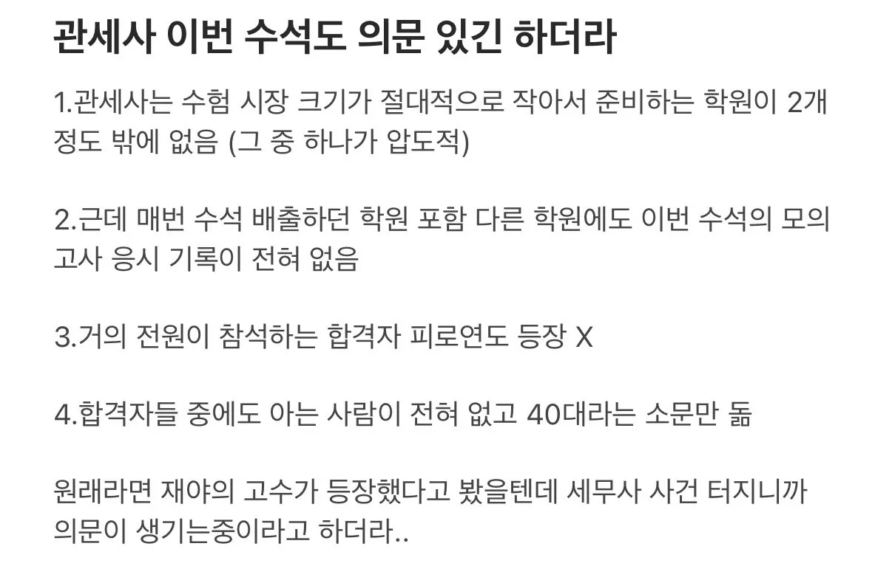

현재 관세사 수석도 의심이 되는 상황
댓글
그냥 내성적인 천재일수도 있는거라 다 의심하는건 좀 너무한듯
내성적인 천재가 관세사 시험을 본다라.. ㅋㅋㅋㅋㅋㅋㅋㅋㅋㅋ
볼수도 있지 외향적인 바보만 볼수 있는 시험임?
아니 천재가 응시 하기에는 관세사 시험이 메리트가 매우 떨어지는 시험이라서..
흠 관세사 대우가 좀 아쉬운가보네 그쪽은 나도 잘 몰라서 ㅋㅋㅋ
전년도 수석들이 이과목이 100점 나오는게 맞다고? 다의심하는 상황이라
이거는 그 세무사 시험 얘기 아니라서 100점인지는 모르지 않음?
근데 관세사 판이 진짜 존나좁긴함 관세사 합격자 명단 보면 90%가 같은학원인데
한동안 모든 시험 수석애들 전부 AI의심하는글 올라오겠군..
모의고사 안 친 건 의아하긴 하네 필력경진대회가 아니라 정해진 틀에 자기를 맞추는 식의 시험이라 엔간하면 꼬박꼬박 모의고사 치고 첨삭 받아야 될텐데
올해 나왔던 역사상 첫 리트 만점자도 말 나오고 있던데 문제가 많이 커짐.
미래에는 그깟 수석 안되게끔 조절 가능하겠지! 하하하하하하하하
내성적이고 본인 성적에 과도한 스트레스를 받는 은둔형 수석이라고 하면 말이 안되는 거 까지는 아닌데
모고 치면 장학금 같은 혜택을 주고 학원에서도 모고는 꼭 응시해야지 감 잡힌다고 독려할텐데
굳이 왜 안하나 싶긴하지
근데 세무사 쪽보다는 근거가 좀 빈약하다
2026년도가 기묘한 해라서 재야의 역대급 수재들이 동시에 각기 다른 시험에서 수석을 하는것
VS
ai 썻네
황금세대 VS 최악의 세대
Ai로 합격한 애들은 세무사 죽이고 싶을듯ㅋㅋㅋ
세무사가 먼저터진거지 이정도면 무조건 어디서든 터질거긴해
ㅇㅇ코로나 초창기 때 확진자 1호 까던 느낌
조만간 트젠바 갔다가 걸린 새끼처럼 왕창 나올듯ㅋㅋㅋㅋ
근데 세무사놈이 ㅈㄴ 티가 나버림 우사인 볼트보다 빠른 기록을 세워버리면 어떡하냐고 ㅋㅋㅋ
오히려 판커지기전에 터트려서 좋아할수도
이미 쓰고 합격한 놈들은 알빠노긴 함 ㅋㅋ 앞으로 쓸 예정이었던 애들만 ㅈ된거지 빡빡하게 검수할테니
ai로 합격한x 준비중인o
수능 전이라 다행이지
ㅋㅋㅋ기술이 발전했더니 도리어 인간의 능력을 믿기 힘들어진다는 게 참 아이러니하네ㅋㅋ
존나 많을것 같은데 머리나쁜애들이나 ai를 수석될정도로 쓰지 대부분 합격컷보다 높게만 할듯
올해 수능 만점자 20명은 나오겠네
그렇게 안되도록 미리 터트린거 아닐까? 다크나이트 세무냥이 ㄷㄷ햐
이거 기사시험도 이미 꿀빤애들 있을듯 ㅋㅋ 기기검사를 아예안하는수준이던데
작년부터 공무원시험도 날먹으로 들어간애들 많겠는데
ㅋㅋ
수능 만점 나와도
저거 AI 안경 의심 받을듯.........
피로연은 어디서 주관한건데?
원래 전문직 같은 경우는 협회에서 합격자등을 대상으로 주최한다고 하던데
수능만점자 네이놈들!!
이미.ai로 합격한애들 합격취소는 커녕
역추적이되려나
음.. 근거랍시고 가져온게 너무 약한데?
시험지 배부 전에 안경 검사 필수로 하고 전후사진 증거로 찍어야 하는거 할것 같음 ... 검사 개 빡시겠넹
여러명도 아니고 단 한명인데 일반인이 모르는 신기술로 조작할 수도 있지
그정도의 극소수 인원이라면 더더욱 남들이 알기 전에 선수쳐야하고
어차피 너가 알 정도면 이미 전세계에 수천만명 이상 알고 있다고
일단 이 시기 자격증 취득한 애들은 밥값 못할 때마다 두고두고 ai로 딴 건지 의심받을 듯.
뭐 최소한 시험 성적이 어떤지 나와야지 저거 가지고는 너무 무리수 아닌가?